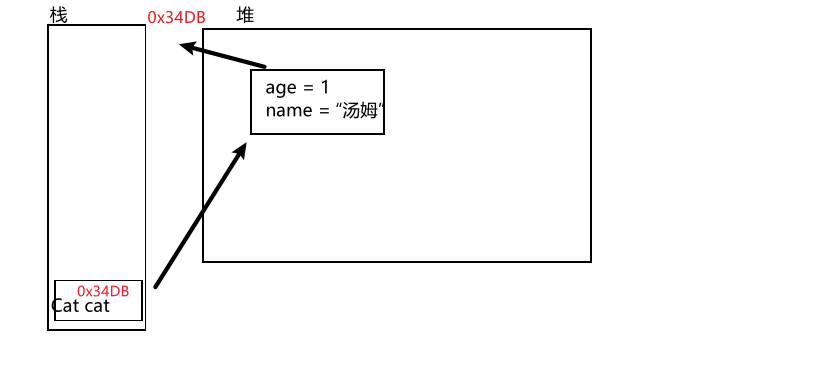
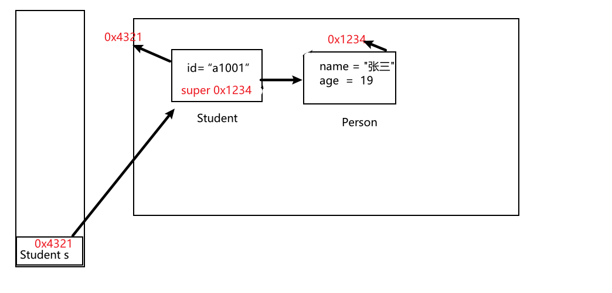

面向对象编程
2021-01-21 14:27 字数：8498 标签： Java一、类和对象
面向对象是相对于面向过程来讲的，指的是把 相关的数据和方法组织为一个整体来看待。面向过程关注的是执行的过程，面向对象关注的是具备功能的对象。 面向过程到面向对象，是程序员思想上 从执行者到指挥者的转变。
1.1 定义类
类定义格式：
class 类名 {
成员属性
成员方法
}
属性定义格式：
// 1.定义成员属性，没有指定初始值，初始为默认值
权限修饰符 数据类型 属性名;
// 2.定义成员属性，指定初始值
权限修饰符 数据类型 属性名 = 初始化值;
方法定义格式：
权限修饰符 返回值类型 方法名(形式参数列表) {
// 方法体
return 返回值;
}
成员变量和方法的修饰符是可选的。一般都是要写上去来限定访问权限，不写将采用默认权限限制成员变量与方法。其实默认的权限只允许包内私有访问，即只能被同一包内的类访问。
例如：
class Cat {
String name;
int age;
public void setName(String s) {
name = s;
}
public void setAge(int i) {
age = i;
}
public String getName() {
return name;
}
public int getAge() {
return age;
}
public void running() {
System.out.println(name+"在跑");
}
}
对象的属性可以在类内赋值，也可以用方法给予像setName()和setAge()。这里还可以在main方法中对创建好的Cat对象直接.加属性名再赋值，由于属性都没用权限修饰符限制对外的访问。
1.1.1 构造方法
构造方法是在创建某类的对象时自动调用的方法，用于初始化对象。如果程序员没有编写构造方法，编译器会自动生成默认的构造方法，默认的构造方法没有参数列表。程序员根据自己的需要编写带有形参的构造器，形参用来指定属性的初始化。自己写构造器，Java将不自动生成默认构造器。所以建议全参构造器和无参构造器一起写。
构造方法的格式：
权限修饰符 类名(形式参数列表) {
// 方法体
}
例如：
class Cat {
// ...
public Cat() {}
public Cat(String s) {
name = s;
}
public Cat(int i) {
age = i;
}
public Cat(String s, int i) {
name = s;
age = i;
}
}
Java提供了this关键字来表示当前对象，可以解决对象的成员变量与本地变量的命名冲突。this完全可以当作对象来看待，对象属性可以通过this.属性来访问。在方法中直接使用成员变量，其实都隐含this，可以省略，但有方法有同名变量时，则不能省略，必须指出是局部变量还是对象的成员变量。 例如：
class Cat {
String name;
int age;
public Cat() { }
public Cat(String name, int age) {
this.name = name;
this.age = age;
}
}
this还有个特别的用法，在构造器中用this()调用其他重载的构造器， 例如：
class Cat {
String name;
int age;
public Cat(int age) {
this(null, age);
}
public Cat(String name) {
this(name, 0);
}
public Cat(String name, int age) {
this.name = name;
this.age = age;
}
}
Java规定使用this()时必须在构造器的第一行。
1.1.2 方法的重载
Java方法支持重载，重载用于解决需要多个有同一个方法名但传入的参数有所不同的方法的问题。单纯返回值类型不同，方法签名相同的多个方法的重载是不支持的，也就是说方法重载与返回值类型无关，与方法的形参列表的长度，形参类型，形参的顺序有关。
例如：
class Cat {
String name;
int age;
public Cat(int age) {
this(null, age);
}
public Cat(String name) {
this(name, 0);
}
public Cat(String name, int age) {
this.name = name;
this.age = age;
}
}
1.1.3 可变参数
JDK1.5后支持可变参数列表，方法的参数的数量可以任意一个，不过可变参数必须放在参数列表的最后的位置，否则编译出错。
写法：
权限修饰符 返回值类型 方法名(数据类型... 参数名称) {
// 方法体
}
// 可变参数前可有多个形参，但可变参数后不能有别的参数，否则无法确定可变参数的位置
权限修饰符 返回值类型 方法名(数据类型 参数名称, 数据类型... 参数名称) {
// 方法体
}
/*
这个绝对不允许
权限修饰符 返回值类型 方法名(数据类型... 参数名称, 数据类型 参数名称) {
// 方法体
}
*/
可变参数会被打包成数组在方法内部使用。可变参数只在方法内才被当作数组，在传参的位置并不是，所以不可以把可变参数的类型的一个数组传入。如果传入一个数组，可变参数就只有一个，把这个数组打包成含有一个元素为这个数组的数组，导致类型不一致。并不是数组内容当作可变参数的内容。
class Print {
public static void printf(String s, int... args) {
for (int i=0; i<args.length; i++)
System.out.printf(s, args);
}
public static void main(String[] args) {
// 1，2，3在prinf中会被打包成数组{ 2021, 1, 22 }
Print.print("%d-%d-%d", 2021, 1, 22);
// 不可取：
// Print.print("%d-%d-%d", new int[3]{ 1, 2, 3 });
}
}
1.2 对象的初始化
对象创建的格式：
类名 对象名 = new 构造方法();
访问对象属性和调用格式：
对象名.属性名;
对象名.方法名(实际参数列表);
例如：
Cat cat = new Cat();
cat.age = 1;
cat.name = "汤姆";
cat.running();
简单了解对象实例化过程在内存中分配空间（地址信息是假设的）。先是在栈中为Cat对象引用分配空间（对象引用可能是用于指向对象在堆中的的起始地址的引用指针，也可能是代表对象的句柄或者其他与此对象相关的位置），然后是在堆中为对象申请空间并存储对象的成员变量，假如类有静态变量，是存在方法区中，与对象和局部变量不同，对象是在堆中，局部变量是在栈中。
例如： 
1.2.1 静态代码块
关键字static，修饰成员变量时，表示它是类所有实例对象共享的变量；修饰方法类似，表示类所有对象共有的方法，说明static修饰的属性和方法与对象无关，与类相关。static修饰的成员属性，有时又称“类变量”，方法又称“类方法”。类与对象的关系，可以简单认为，一个是图纸，一个是根据图纸造出的实物。类就是图纸，对象就是实物。static修饰的变量会储存在JVM运行时内存区域的方法区中，方法区存放类加载信息，静态变量和常量等。
关键字还可以修饰代码块在结构定义语句块内，例如：
class Cat {
// ...
static { // ... }
// ...
}
在第一次创建对象或访问类的静态变量时，类加载器会加载该类的类型信息，并只执行一次static代码块，其作用是初始化静态变量，在构造方法调用前。
1.2.2 构造代码块
与静态代码块类似，只是没有static关键字的代码块放在结构定义语句块中，例如：
class Cat {
// ...
{ // ... }
// ...
}
它在构造器调用前，静态代码块执行后，执行。每次实例化该类是都会执行的代码块。起作用是构造对象内部，初始化成员变量。其意义有时对于匿名内部类初始化是必须的，由于没有构造方法，只能使用静态代码块和构造代码块来实例初始化。
1.3 main方法
.java文件可以有多个class。但只能拥有一个public修饰的class，而且其类名必须与.java文件名一致，公共类是这个java源文件的主类，它的main方法才是程序的执行入口。
main方法形式：
public static void main(String[] args) {
}
Java中的main方法，被public和static修饰，可以被Java解释程序直接调用执行，而不用创建相关类的对象（在命令行中输入"java 主类名"回车直接调用main方法）。主方法可以没有返回值，但方法名不能写错，否则抛出"NoSuchMethodError: main"的错误。形参列表是字符串数组，可以接受控制台输入参数。 每个表示实际参数的字符串不含空格的话，可以不用双引号扩起来，如果含有空格，请用一定要用双引号包起来。
例如：
/*
命令行：
(1) java Main 1 2 3 4 5 6 7
(2) java Main "Hello World" "I love Java" "I love Spring Boot"
*/
class Main {
public static void main(String[] args) {
for (int i=0; i<args.length; i++) {
System.out.println(args[i]);
}
}
}
/* 输出：
(1)
1
2
3
4
5
6
7
(2)
Hello World
I love Java
I love Spring Boot
*/
二、 继承
Java通过使用关键字extends，来定义一个子类继承父类。允许多重继承，但支持不多继承。多重继承意思说，允许一个子类的父类也有父类，不断追溯祖先，继承体系可以构建出一个家族树，树的高度没有限制，家族的代数没有限制，所有类都有一个共同的祖先类就是Object，在java.lang包中。多继承，就是子类可以继承多个父类，简单理解为一个儿子有多个生父，这个在Java不允许。
继承格式：
class Parent {
}
class Son extends Parent {
}
2.1 super关键字
super关键字用法与this类似，不过它代表子类中从父类继承的部分。通过它可以访问父类部分的变量，如"super.父类成员属性名称;"。还可以调用父类的构造方法。
2.2 子类实例化
子类的构造器的第一行必须是super()，先构造出对象父类部分，再初始化子类部分变量。
class Person {
String name;
int age;
public Person(String name, int age) {
this.name = name;
this.age = age;
}
public Person() {}
}
class Student extends Person {
String id;
public Student(String name, int age, String id) {
super(name, age);
this.id = id;
}
}
子类实例化如下：
Student s = new Student("张三", 19, "a1001");
Person p = s;
Student s2 = (Stduent)p;
简单看看子类对象实例化在内存中如何分配空间的（地址信息是假设的）。子类对象有super，其实可以认为是指向子类实例对象父类部分的地址的引用指针。

子类对象引用可以赋值给父类引用，会自动类型转换，在家族树中通常由老到小往下排的，故又叫做向上类型转换。如果父类对象引用赋值给子类对象引用，必须加上强制类型转换符，属于强制类型转换，又叫做向下类型转换。
多态
多态性是允许你将父对象设置成为一个或更多的他的子对象相等的技术，赋值之后，父对象就可以根据当前赋值给它的子对象的特性以不同的方式运作。
2.2 方法的覆写
父类已有的非静态方法会继承到子类当中，子类的方法是允许改写父类的实现的，这又被叫做方法的重写。可以使用Java提供的注解@Override来说明这个方法是重写父类的方法，如果这个重写父类方法的声明是父类中不存在的方法就会编译出错，用来保证自己重写方法的方法签名编写正确。
例如：
class Animal {
public void running() {
}
}
class Cat extends Animal {
String name;
public Cat(String name) {
this.name = name;
}
public Cat() {}
@Override
public void running() {
System.out.println(name+"在跑");
}
}
2.3 final修饰符
final可以修饰成员变量，非静态成员方法和类。
- final变量只能赋值一次，必须赋值
- final方法在继承中不能被重写，如果不在继承中使用，编译器会将方法内嵌提供方法体的执行效率
- final类不能被继承，其所有方法隐式为final。
三、访问权限
3.1 包
- 把功能相似或相关的类或接口组织在同一个包中，方便类的查找和使用。
- 包如同文件夹一样，不同的包中的类的名字是可以相同的，当同时调用两个不同包中相同类名的类时，应该加上包名 加以区别。因此，包可以避免名字冲突。
- 包也限定了访问权限，拥有包访问权限的类才能访问某个包中的类。
3.1.1 包名规范
包名必须小写，并用.划分目录，一般为com.公司名.项目名.模块。如：com.github.qinry。
3.1.2 定义包和包导入
包的定义必须在java源文件的首行，例如:
package 包名。
在开发过程，会使用自己编写的库或第三方的API,就需要导包。例如：
import 包名.类名;
import static 包名.类名.静态对象;
import static 包名.类名.静态方法;
静态导入的对象和方法直接访问和调用，不用使用.。
3.2 权限修饰符
不使用修饰符修饰的类、成员变量、方法，表示默认的权限，可以认为是包内私有，只允许同包访问，下面都说是默认权限。 类只能用public权限或者默认权限，编译单元只能拥有一个public权限的类；成员内部类可以用public、private权限和默认权限。 成员变量和方法可供选择的权限是全部。局部变量不能用static修饰也不能用权限修饰符修饰
四、内部类
4.1 成员内部类
成员内部类在结构定义语句块中，写法：
class Outter {
int a;
String s;
class Inner {
int x;
{
x = Outter.this.a;
}
}
}
成员内部类可以链接外部类，意思说可以无条件访问外部类的所有成员属性和成员方法（包括private成员和静态成员）。具体来说，可以以"外部类名.this.成员变量"的方式访问或外部类名.this.成员方法(实际参数列表)的方式来调用。如果内部类和外部类之间没有命名冲突可以不加这些限定，但如果有冲突，则必须加上这些限定。
内部类的实例化，内部类类型要指明外部类类型，要通过外部类的对象才能使用内部类new表达式
例如：
Outter outter = new Outter();
Outter.Inner inner = outter.new Inner();
4.2 局部内部类
局部内部类在一个方法内部或者一个作用域内定义。它和成员内部类的区别在于局部内部类的访问仅限 于方法内或者该作用域内。
例如：
class Person{
public Person() { }
}
class Man {
public Man(){ }
public People getPerson(){
class Student extends People{
//局部内部类
int age =0;
}
return new Student();
}
}
局部内部类就像是方法里面的一个局部变量一样，是不能有public、protected、private以及 static修饰符的。
4.3 匿名内部类
匿名内部类由于没有名字，所以它的创建方式有点儿奇怪。创建格式如下：
new 父类构造器（参数列表）|实现接口() {
//匿名内部类的类体部分
}
例如：
class B {
public void do() {}
}
class A {
public B getB() {
return new B() {
@Override
public void do() {
System.out.println("...");
}
};
}
}
在使用匿名内部类的过程中，我们需要注意如下几点：
- 使用匿名内部类时，我们必须是继承一个类或者实现一个接口，但是两者不可兼得，同时也只能 继承一个类或者实现一个接口。
- 匿名内部类中是不能定义构造函数的。
- 匿名内部类中不能存在任何的静态成员变量和静态方法。
- 匿名内部类为局部内部类，所以局部内部类的所有限制同样对匿名内部类生效。
- 匿名内部类不能是抽象的，它必须要实现继承的类或者实现的接口的所有抽象方法。
- 只能访问final型的局部变量
建议使用lambda表达式，其应优先于匿名内部类。
4.4 静态内部类
静态内部类也是定义在另一个类里面的类，只不过在类的前面多了一个关键字static。 静态内部类是不需要依赖于外部类对象的，这点和类的静态成员属性有点类似，并且它不能使用外部类的非 static成员变量或者方法。
public class Test {
public static void main(String[] args) {
Outter.Inner inner = new Outter.Inner();
}
}
class Outter {
public Outter() {
}
static class Inner {
public Inner() {
}
}
}
五、抽象类和接口
5.1 抽象类
抽象类必须使用abstract class声明 一个抽象类中可以没有抽象方法。抽象方法必须写在抽象类或者接口中。 写法：
abstract class 抽象类名 {
public abstract 返回值类型 方法名(形参列表);
}
只声明而未实现的方法称为抽象方法（未实现指的是：没有“{}”方法体），抽象方法必须使用abstract关键字声明。
在抽象类的使用中有几个原则：
- 抽象类本身是不能直接进行实例化操作的，即：不能直接使用关键字new完成。
- 一个抽象类必须被子类所继承，被继承的子类（如果不是抽象类）则必须覆写(重写)抽象类中的全部抽象方法
常见问题
1、 抽象类能否使用final声明？
不能，因为final属修饰的类是不能有子类的 ， 而抽象类必须有子类才有意义，所以不能。
2、 抽象类能否有构造方法？
能有构造方法，而且子类对象实例化的时候的流程与普通类的继承是一样的，都是要先调用父类中的 构造方法（默认是无参的），之后再调用子类自己的构造方法。
抽象类和普通类的区别
- 抽象类必须用public或procted 修饰(如果为private修饰，那么子类则无法继承，也就无法实现其 抽象方法）。默认缺省为 public
- 抽象类不可以使用new关键字创建对象， 但是在子类创建对象时， 抽象父类也会被JVM实例化。
- 如果一个子类继承抽象类，那么必须实现其所有的抽象方法。如果有未实现的抽象方法，那么子类也必 须定义为 abstract类
5.2 接口
如果一个类中的全部方法都是抽象方法，全部属性都是全局常量，那么此时就可以将这个类定义成一个接口。 写法：
interface 接口名称{
全局常量 ;
抽象方法 ;
}
因为接口本身都是由全局常量和抽象方法组成 ， 所以接口中的成员定义可以简写：
1、全局常量编写时， 可以省略public static final 关键字，例如：
public static final String INFO = "内容" ;
简写后：
String INFO = "内容" ;
2、抽象方法编写时， 可以省略 public abstract 关键字， 例如：
public abstract void print() ;
简写后：
void print();
实现接口的导出类，用法：
class 类名 implements 父接口1,父接口2... {
@Override
public 返回值类型 方法名(形参列表) {
// 方法体
return 返回值;
}
}
如果一个类即要实现接口，又要继承抽象类，用法：
class 类名 extends 基类 implements 父接口1,父接口2... {
}
Java中的接口允许多继承，用法：
interface A extends B, C{
}
如果一个接口要想使用，必须依靠子类。 子类（如果不是抽象类的话）要实现接口中的所有抽象方法。
接口和抽象类的区别
- 抽象类要被子类继承，接口要被类实现。
- 接口只能声明抽象方法，抽象类中可以声明抽象方法，也可以写非抽象方法。
- 接口里定义的变量只能是公共的静态的常量，抽象类中的变量是普通变量。
- 抽象类使用继承来使用， 无法多继承。 接口使用实现来使用， 可以多实现
- 抽象类中可以包含static方法 ，但是接口中不允许（静态方法不能被子类重写，因此接口中不能声明静态方法）
- 接口不能有构造方法，但是抽象类可以有
5.3 instanceof运算符
作用：判断某个对象是否是指定类的实例，则可以使用instanceof关键字 格式：
实例化对象 instanceof 类 //此操作返回boolean类型的数据
六、异常处理
异常是在程序中导致程序中断运行的一种指令流。
异常类继承体系，如下：

Throwable存在两个子类：
- Error：表示的是错误，是JVM发出的错误操作,只能尽量避免，无法用代码处理。
- Exception：一般表示所有程序中的错误，所以一般在程序中将进行try…catch的处理。
异常类分两类：一类是非受检异常，又为运行时异常；另一类是受检异常。
多异常捕获的注意点：
- 捕获更粗的异常不能放在捕获更细的异常之前。
- 如果为了方便，则可以将所有的异常都使用Exception进行捕获。
6.1 异常捕获
try块中执行代码，遇到异常抛出，交给catch捕获, 然后进行异常处理。由于try中抛出异常，会在catch中匹配，是不会回到原来的地方，将try-catch语句可以放入while循环，在while的帮助下，能回到到原来中断的地方继续执行，这是一种恢复操作的模型（不太实用，尽量少用，因为它会导致耦合）。
语法:
try {
// 假如这里会抛出异常
} catch(异常类1 对象名1) {
// 这里匹配异常后处理
} ...
catch(异常类n 对象名n) {
// 这里匹配异常后处理
}
子类（或者导出类）重写方法声明的异常说明所列的异常范围可以比父类（或接口）声明的范围窄，这与子类（或导出类）的方法会比父类（或接口）声明的方法多的情况是相反的。
子类（或者导出类）所列的异常类，不要求对应的异常类一定一致，可以是对应异常类的派生类。
异常限制对构造器不起作用，派生类构造器不能捕获基类构造器抛出的异常，所以派生构造器的异常说明必须包括基类构造器的异常说明；
6.2 异常抛出
创建一个异常对象，然后从当前环境将异常对象抛出，中断当前方法或作用域的执行。
语法:
throw new 异常类名("异常信息");
关键字throw之后，和创建普通对象一样创建异常对象。
6.3 异常说明
异常说明不会处理异常，只是将异常交给方法调用来处理。
为了让调用者能知道方法可能抛出异常，以便于捕获它们，用关键字throws跟上一个或多个异常类名，作为方法声明的一部分,在参数列表之后，花括号之前。声明方法将会抛出的异常，实际上不一定抛出。为异常先占个位子，对于定义抽象基类和接口时比较重要，其派生类或接口实现将能抛出预声明的异常。
语法:
权限修饰符 返回值类型 方法名() throws 异常类1, 异常类2, ..., 异常类n {
// 会抛出异常
}
6.4 自定义异常类
编写一个类， 继承Exception，并重写一参构造方法 即可完成自定义受检异常类型。 编写一个类， 继承RuntimeExcepion，并重写一参构造方法 即可完成自定义运行时异常类型。
比如：
class MyException extends Exception{
// 继承Exception，表示一个自定义异常类
public MyException(String msg){
super(msg) ;
// 调用Exception中有一个参数的构造
}
}
6.5 finally子句
用finally子句进行清理，不仅有内存清理，还有资源恢复初始态，如把打开的文件关闭等等。常常将finally放在catch之后。
语法:
try {
// 抛出异常
} catch(Exception e) {
// 处理异常
} finally {
// 清理
}
finally能保证总是执行的，除非在try或catch中停止了JVM（比如：System.exit(0)）,则finally不会执行。
即使是在它之前有return语句，也会在方法结束前，执行finally子句。这里要注意，如果return语句返回的是局部变量，实际上是返回这个变量的拷贝。所以return返回变量，finally即使重新赋值给这个变量，也不会对这个变量的拷贝产生任何作用。不过finally子句操作的变量是对象的引用，对其属性进行赋值修改， 却会影响对象属性的值。
finally代码中不建议包含return，因为程序会在上述的流程中提前退出，也就是说返回的值不是try或 catch中的值。
finally还有缺陷，会导致一些异常被忽略,如下:
// 在某个类内部
static void f() throws FirstException {}
static void g() throws SecondException {}
public static void main(String[] args) {
try {
try {
f();
} finally {
g();
}
} catch(Exception e) {
}
}
这里导致 f() 的FirstException被忽略。
6.6 异常链
捕获底层异常后再抛出高层异常，还可以把原始异常信息保存在这个新抛出的异常内，通过getCause()可以查看原始异常信息。对于简单的程序而言，通过异常链可以实现将受检异常转换为非受检异常来达到屏蔽检查的目的。
Throwable子类包括Error（报告系统错误）, Exception（最常用的异常）以及RuntimeException（运行时异常，又称未检查异常）。他们的构造器，有接受Throwable类型的cause参数(表示原始异常对象)的构造器,能够把原始异常传递给新异常。有同等效果的一个方法initCause()也能传递原始异常，如果异常类没有传入cause参数的构造器就可以使用initCause()方法。
例如:
// LowLevelException表示底层异常
// HighLevelException表示高层异常
try {
// ..
} catch(LowLevelException e) {
throw new HighLevelException(e);// 传递新异常，并抛出
}
或
try {
// ...
} catch(LowLevelException e) {
// 在某个方法内
// 自定义继承Exception的异常类
HighLevelException e2 = new HighLevelException();
e2.initCause(e);
throw e2;
}